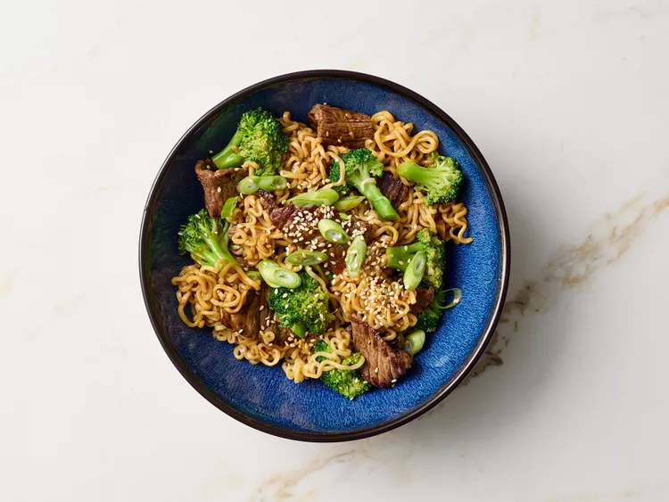

Recipe: Beef and Broccoli Ramen Stir Fry
HOME

Photo by: Jake Sternquist / Food Styling: Charlie Worthington / Prop Styling: Gabriel Greco
This beef and broccoli ramen stir fry comes together quickly - adding the noodles with the
steak prevents overcooking the noodles. Make sure you have all your ingredients prepped
before you start cooking.
- 1/2 cup lower sodium beef broth
- 1/4 cup reduced-sodium soy sauce
- 2 tablespoons honey
- 1 tablespoon cornstarch
- 1 tablespoon rice vinegar
- 2 teaspoons grated fresh ginger
- 2 cloves garlic. minced
- 2 teaspoons toasted sesame oil
- 1/4 teaspoon crushed red pepper
- 6 cups water
- 2 (3-ounce) packages instant ramen noodles (any flavor, seasoning packets discarded)
- 3 cups broccoli florets
- 1 tablespoon vegetable oil
- 1 pound beef sirloin steak, thinly sliced in bite-sized strips
- 1/4 teaspoon salt
- 1/4 cup chopped green onions
- 2 teaspoons sesame seeds, toasted